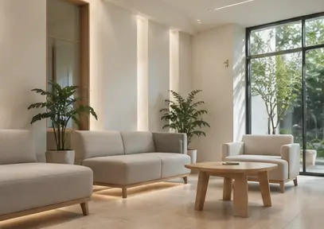
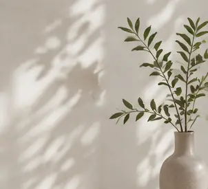
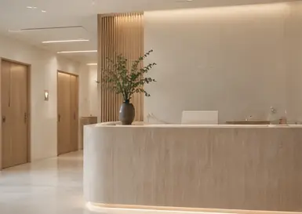

美顏針灸
依臉部肌肉、筋膜與個人狀態評估施針，針對氣色、輪廓與表情緊繃進行調理。
顏面筋膜調理
從眉間、下顎、咀嚼肌等容易累積張力的位置著手，讓長期緊繃的表情慢慢舒展。
頭顏調理
從頭皮到頭顏的緊繃狀態進行評估，適合長時間用腦、容易感到頭臉緊繃的你。
睡眠・壓力調理
如果疲憊不只出現在臉上，也可以從睡眠、壓力與整體身體狀態進一步評估。
每個人的表情習慣、肌肉張力與在意的位置都不同。醫師會先觀察臉部狀態，再依個人情況安排施針部位與方式。
常見評估區域
觀察皺眉、抬眉等表情習慣與局部緊繃。
評估長時間用眼、用腦後容易累積的頭顏張力。
從臉部肌肉與表情活動，了解兩側張力狀態。
特別留意咬緊牙關、咀嚼習慣造成的緊繃感。
連同下顎至頸部的張力一起評估，讓調理不只停留在單一位置。
圖示為療程概念示意，實際施針位置與方式將由中醫師依個人狀況診察後決定。
告訴醫師你最在意的問題，不需要自己先選療程。
依臉部與身體狀況，說明適合的調理方式與注意事項。
確認療程後，再依個人狀況進行施作。
依實際反應與需求，討論是否需要後續調理。
入睡困難、淺眠易醒、緊繃焦慮。
經期不順、經前不適、產後調理。
脹氣、食慾不佳、容易疲倦。
肩頸僵硬、腰背痠痛、久坐不適。
中醫美顏・顏面針灸・體質調理
予澄相信，美顏不是追求一張標準的臉。比起改變五官，更重要的是先理解每個人的臉部張力、生活習慣與身體狀態，再決定適合的調理方式。
從候診、問診到療程，我們希望少一點匆忙，多一點安心。
獨立診療空間｜預約制看診｜舒適候診區


多數人在施針時會感受到輕微刺感、痠感或局部脹感，通常是短暫的。臉部不同位置的敏感度不一樣，每個人的感受也會不同；療程中若有明顯不適，可以隨時告知醫師調整。
臉部微血管較多，少數人施針後可能出現小範圍瘀青、紅點或局部痠脹，通常會隨時間逐漸淡化。若本身較容易瘀青、正在服用抗凝血相關藥物，或有特殊健康狀況，初診時建議主動告知醫師。
有些人做完後會覺得臉部比較放鬆、氣色或緊繃感有所不同，但每個人的狀態、生活作息與在意的問題都不同，因此不能用固定次數判斷效果。醫師會依初診評估與後續反應，建議適合的療程頻率。
不用先替自己選療程。初診時只要告訴醫師你最在意的問題，例如氣色、輪廓、眉間緊繃、咬肌緊、頭臉壓力感或睡眠狀態，醫師會再依臉部張力、身體狀況與需求評估適合的方式。
多數情況下可以正常安排日常行程，但仍要看施針部位與個人反應。若有局部紅點、瘀青或痠脹，建議先讓皮膚休息；是否適合立即上妝，醫師會依當天療程狀況提供注意事項。
如果你在意的是氣色疲憊、臉部緊繃、輪廓沒精神，或希望用較自然的方式調理臉部狀態，都可以先安排初診評估。是否適合施作，仍需由醫師依個人狀況判斷。
沒有固定答案。療程頻率會依個人狀態、在意問題與每次治療後的反應調整，初診後醫師會提供較適合你的安排，而不是套用固定療程次數。
台中市西區公益路 68 號
近草悟道・市民廣場｜勤美誠品停車場
週一至週六｜10:00–20:30
